The big one. Constructed over 37 years in the 12th century (ie: contemporary with Notre-Dame and Chartres Cathedrals), Angkor Wat is the Mt Olympus of the Hindu faith (if you pardon the mixed metaphor of Greek and Indian religions). The central tower is called Mt. Meru and the whole complex is supposed to represent the 'spatial universe' in miniature - the lower courtyards being the continents and the vast moat, the oceans. As a precursor to Wagnerian symbolism, the seven-headed 'naga' (mythical serpent) serves as a symbolic rainbow bridge for humans to reach the abode of the gods.
However ... despite all that I felt slightly underwhelmed as I didn't feel any 'spirit of place'. Perhaps it was the hoards of tourists jostling for the best views or just the intense heat and humidity. Simply because it is the biggest religious site in the world, doesn't mean it is the best. We all know that size isn't everything.
We returned here in the early evening to watch the sunset, and I was pleased to see a more human side to this vast and rather impersonal temple. Whole families of local Cambodians had replaced the snap-happy tourists, Buddhist monks took photos of each other and monkeys scavenged fruit from rubbish bins.
And I was twice photo-bombed - once by Joan Thomson by the moat and once by a pussycat with Giulia Falsetti - both at sunset at Angkor Wat.
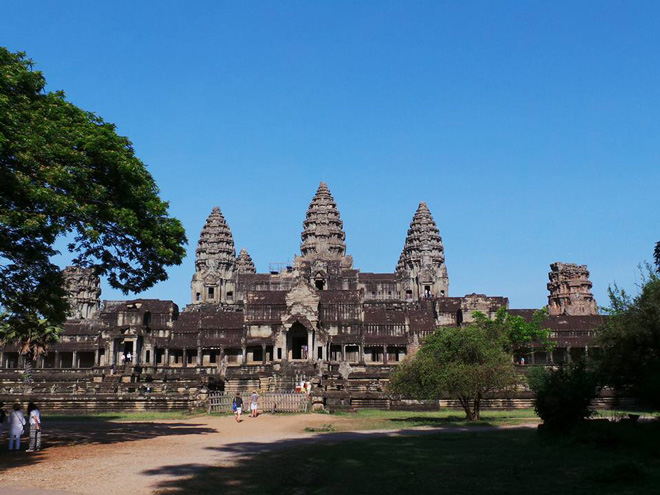
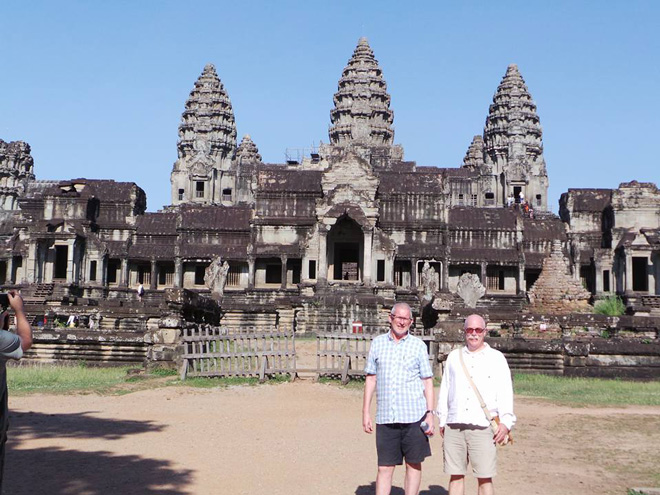
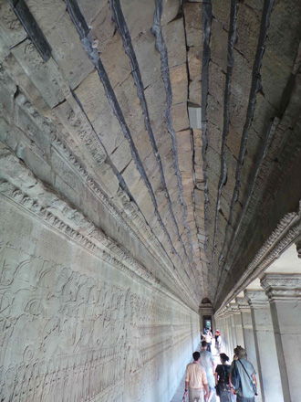
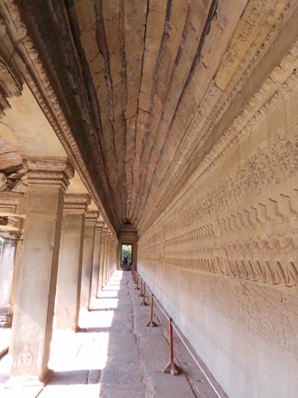
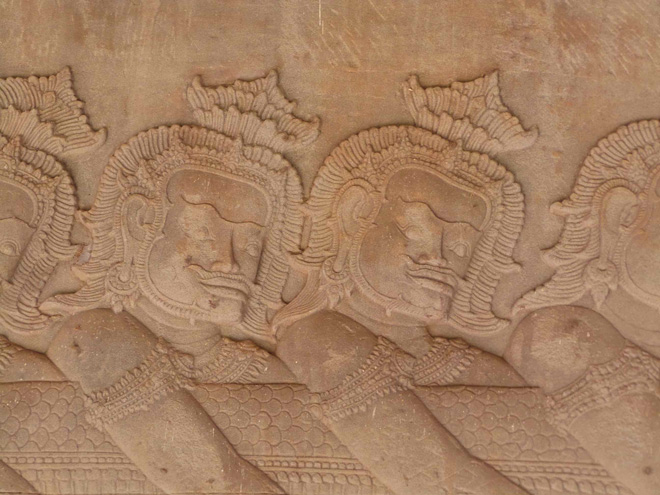
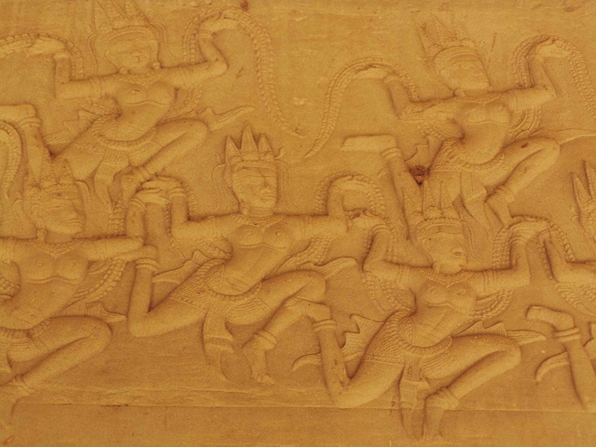
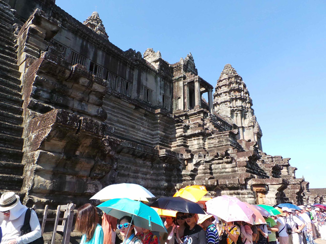
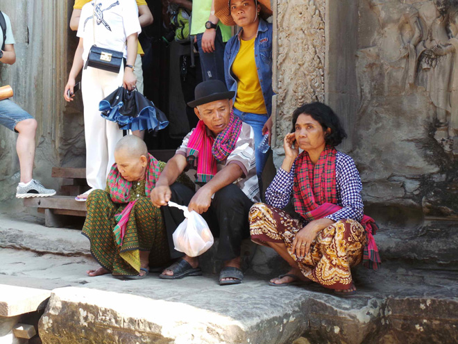
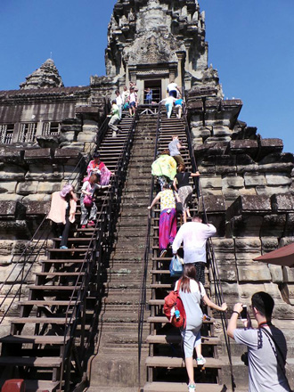
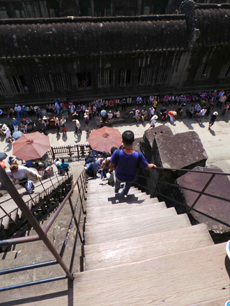
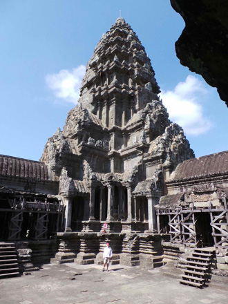
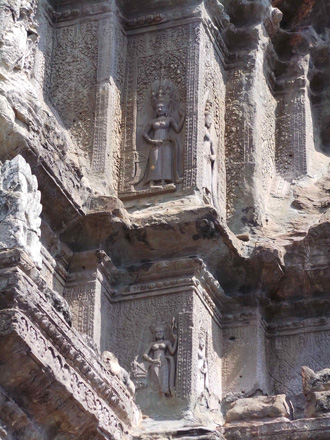
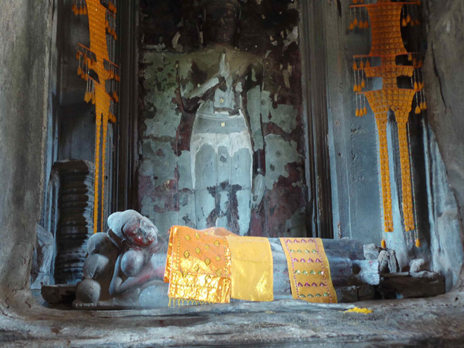
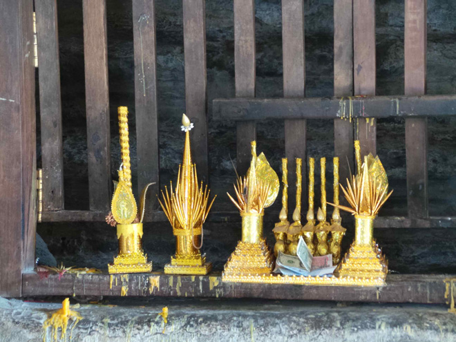
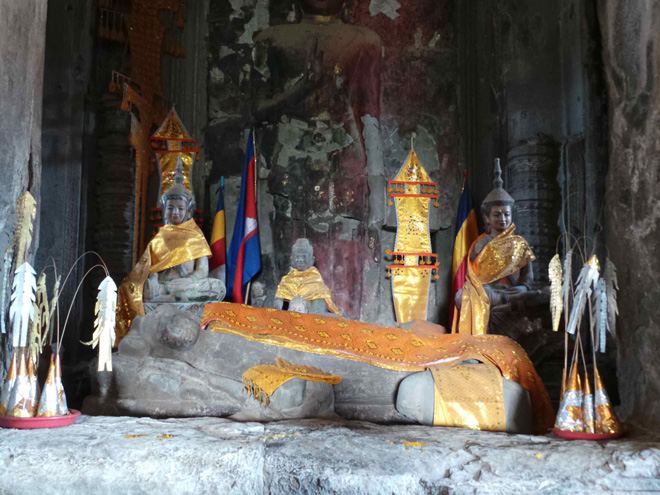
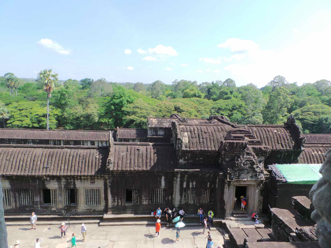
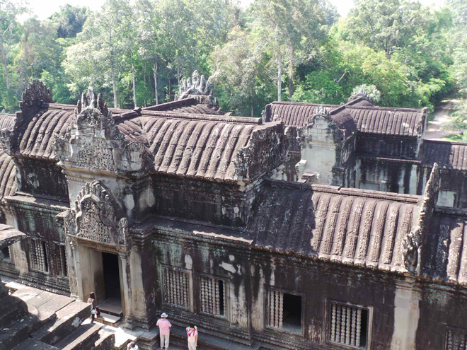
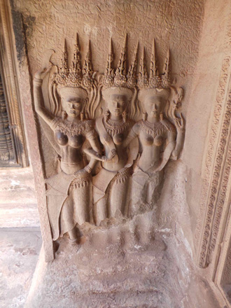
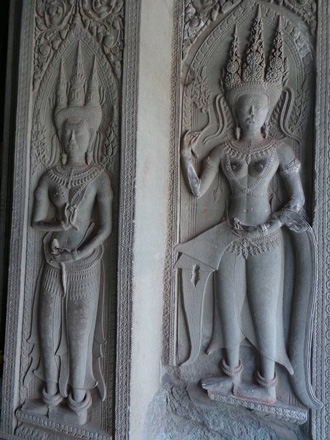
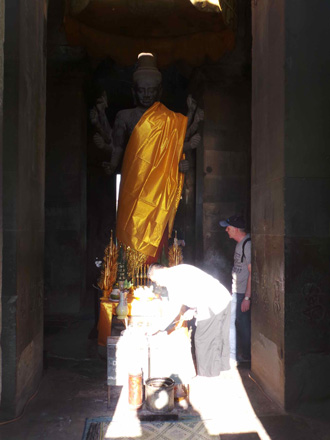
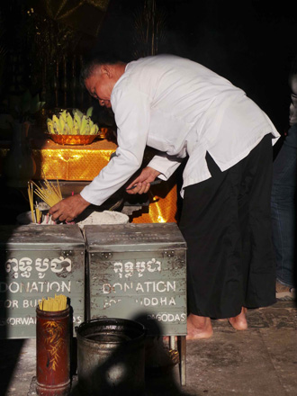
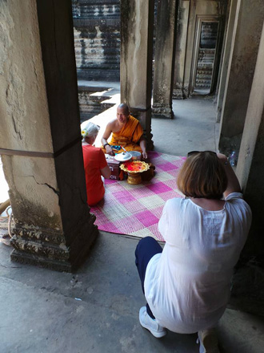
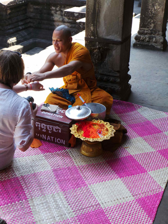
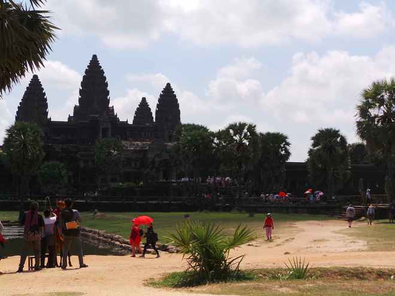
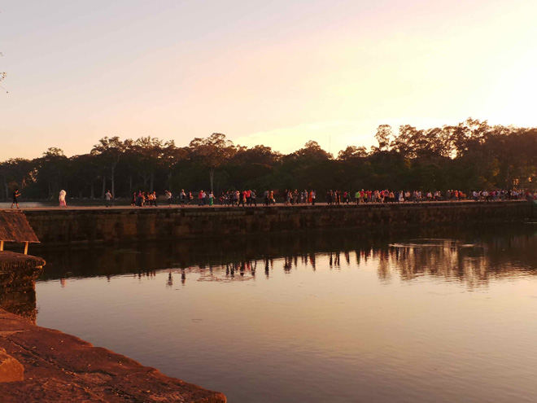
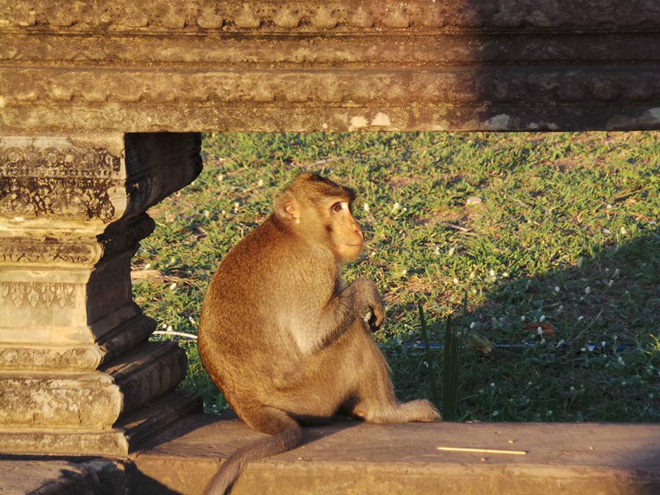
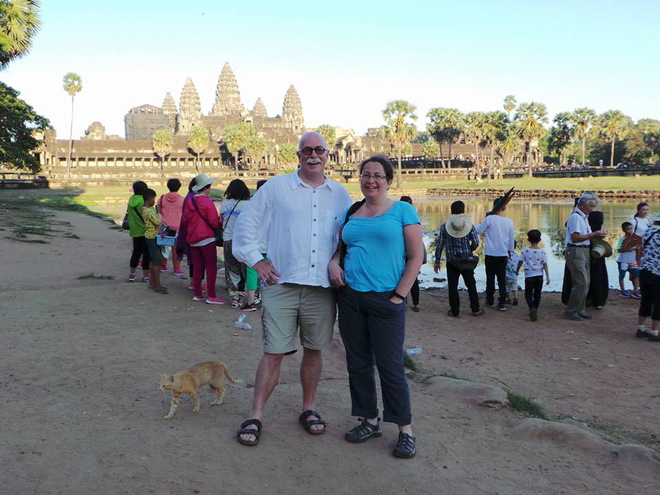
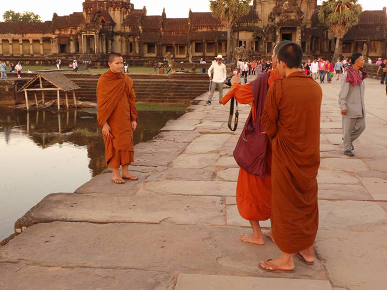
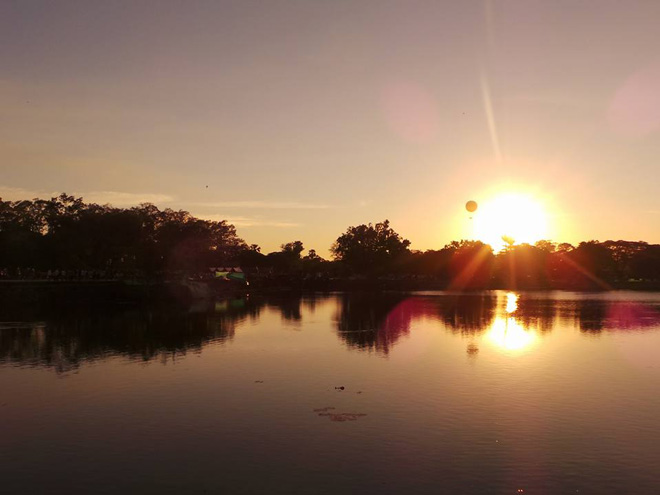